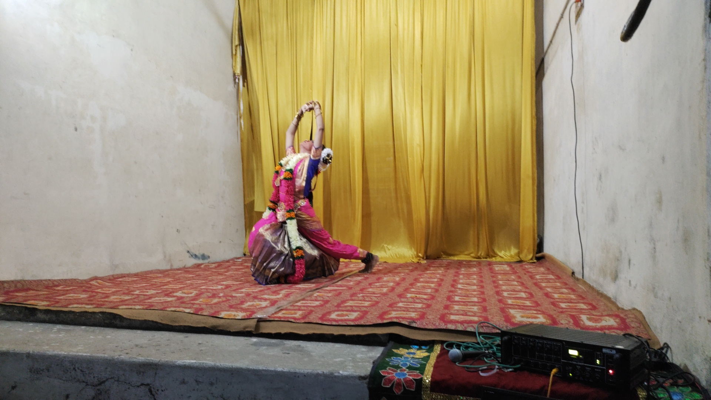

<div class="container">
  <div class="row">
    <div class="col-md-8 offset-md-2">
      <div class="blog-read">
        

        <div class="post-info">
          <span class="post-date">April 21, 2021</span>
        </div>

        <h2></h2>

        <div class="post-text">
          <p>
            Art became a medium, as various forms of it used to spread cultures
            to their generations and also across the world to elucidate its
            followers. Although music used to be a smooth way to spread it only
            engaged the audio sensory of the audience, and it lacks providing a
            visual experience. This brings us to the emergence of dance as a
            part of it, fulfilling the satisfaction of their audience. Their
            performances, especially in the period of the Renaissance, were a
            fusion of music and dance that combine to create a whole art form.
            Dance, as an art form is one of the most common and widely accepted
            by people. This makes it something that is influenced all around the
            world.
          </p>

          <p>
            Dancing has been said to be one of the oldest forms of art in human
            history since it has been being done since time immemorial. With
            this fact in mind, we can infer that every culture around the world
            has its own ways with dancing.
          </p>
          <p>
            I see dance as pure joy and freedom. Dance has enriched my identity
            throughout the years and has become a crucial element of who I am.
            Every time I choreograph, teach, perform, or practise dance, I find
            myself bursting with fresh excitement. I get a great experience when
            I perform Bharatanatyam. I feel Bharatanatyam to be a full art form
            in and of itself, with its distinctive angular movements, balanced
            poses, rapid flow of energy in the body, and the devotional act of
            recreating the mythological stories, their bright imageries, and
            their cathartic emotions through abhinaya. I think it is possible to
            explore these traditional dance styles' boundaries in a thoughtful
            and original way in order to establish their importance and
            relevance in the contemporary world.
          </p>
          <p>
            The phrase "modernising classical dance" refers to a variety of
            artistic endeavours, including the portrayal of a modern theme or
            idea within the framework of a specific classical dance form, the
            modernization of the staging and lighting of a classical dance
            performance, the redefinition of the dance floor and dance music,
            and the presentation of a classical dance number. In contrast to
            popular art, classical art has experienced a decline in rasikas over
            time. Sadly, some artists stray from the more noble goals of
            traditional art and attempt to deliver rapid amusement in their zeal
            to seduce the uninformed. Energy levels spiral downward as rapidly
            as they rise as a result of this short recreational experience. In
            addition, a vacuum is created when they fall, which makes the
            audience want for more immediate fulfilment. The voyage is wasted,
            they are misled, and the dancer is reduced to little more than a
            showman instead of a fully realised artist. Even the so-called
            literati and art enthusiasts frequently give the boisterous dancers
            more praise than the brilliant ones.
          </p>
        </div>
      </div>
    </div>
  </div>
</div>
